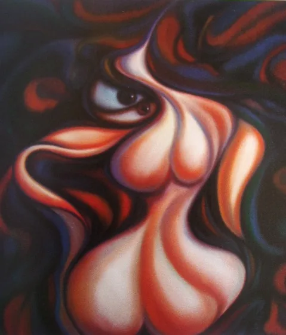
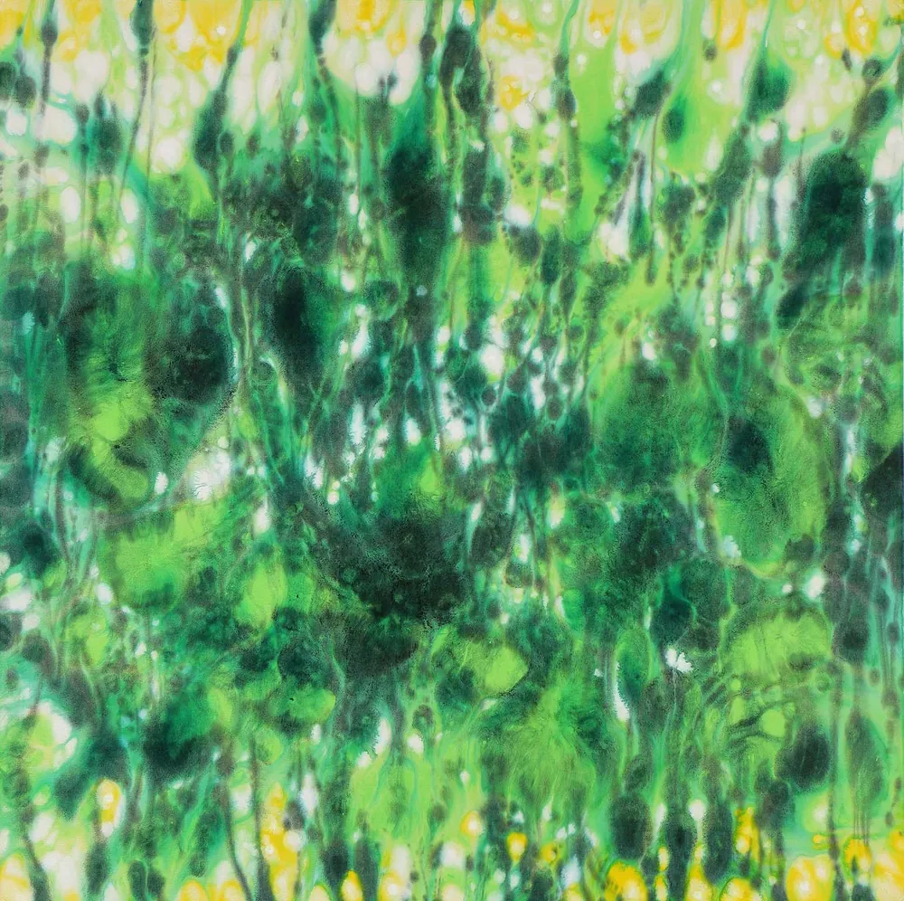
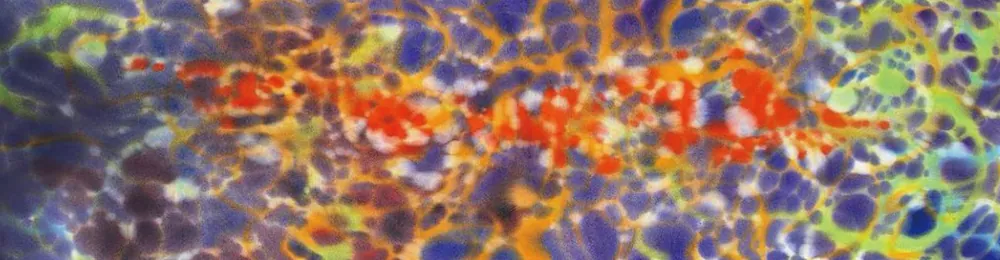

Œuvres
1991–1995
Psyché et ÉrosPsyche & Eros




1996–1998
Scène intérieureInterior Scene


D’autres œuvres de cette série sont disponibles sur demande.Contact
1999
État du cœurState of Heart


2000–2014
Réalisme (Zhi Xiang)Realism (Zhi Xiang)


2007–2009
En marchantTake a Walk
En marchant / hors des traces connues de la quête / en marchant / la pensée suspend son cours / en marchant / à se retourner, tout n’est déjà plus que fumée dissipée / en cet instant je m’évapore / les empreintes laissées, totems / tout est / rien n’estZhi-Qing Liang, déclaration d’artiste, 2009


2010
FluxFlowing





D’autres œuvres de cette série sont disponibles sur demande.Contact
2010
Nuage, montagne, eauCloud, Mountain, Water


2011–2012
Fleur — forme et couleurFlower — Form and Colour


2012
Splendeur millénaireMillennial Splendour


2017–2018
Guang BianGuang Bian (Light Shift)
Le « ressenti » est une émotion et une prise de conscience qui ne se décantent du corps qu’au prix de la réflexion, d’un souffle et d’un temps d’arrêt.Business Today 2018 (publi-reportage, propos exacts à confirmer)


D’autres œuvres de cette série sont disponibles sur demande.Contact
Depuis 2023, en cours
RyukinRyukin (working title)

2024
AbiogenèseAbiogenesis



Psyché et Éros n° 1 1991
Psyché et Éros n° 20 1994
Psyché et Éros n° 29
Psyché et Éros n° 30
Psyché et Éros n° 32
Scène intérieure n° 3 (triptyque) 1996
Scène intérieure n° 21
Scène intérieure n° 23
Scène intérieure n° 25
Scène intérieure n° 27
Scène intérieure n° 29
Scène intérieure n° 32
Scène intérieure n° 35
État du cœur n° 13
État du cœur n° 47
État du cœur n° 98
Feuilles de bananier 2000
Feuilles de bananier 2001
Camphrier 2003
Bambou vert
Lys-gingembre 2004
Colline des acacias En collection
Bananier 2011 En collection
Bananeraie En collection
En marchant n° 36 2007–2009 En collection
En marchant n° 38 2007–2009
En marchant n° 33 2007–2009
En marchant n° 31 2007–2009
En marchant n° 32 2007–2009
En marchant n° 23 2007–2009
En marchant n° 24 2007–2009
En marchant n° 28 2009 En collection
En marchant n° 26 2009 En collection
En marchant n° 1 2009 En collection
En marchant n° 5 2009 En collection
En marchant n° 13 2009 En collection
En marchant n° 14 2009 En collection
En marchant n° 17 2009 En collection
Flux n° 2 2010
Flux n° 4 2010
Flux n° 6 2010
Flux n° 11 2010
Flux n° 12 2010
Flux n° 13 2010
Flux n° 16 2010
Flux n° 18 2010
Nuage 2010 En collection
Montagne 2010 En collection
Eau 2010 En collection
Roses blanches-1 2011 En collection
Roses blanches-2 2011 En collection
Roses rose orangé-1 2011 En collection
Lys orientaux 2011 En collection
Lys magenta En collection
Lys jaunes-2 2012 En collection
Amaryllis-1 2012
Splendeur millénaire-1 2012 En collection
Splendeur millénaire-3 2012 En collection
Splendeur millénaire-4 2012 En collection
Guang Bian n° 6 2017–2018
Guang Bian n° 8 2017–2018
Guang Bian n° 14 2017–2018
Guang Bian n° 18 2017–2018
Guang Bian n° 20 2017–2018
Guang Bian n° 21 2018 En collection
Guang Bian n° 24 2017–2018 En collection
Guang Bian n° 28 2017–2018
Guang Bian n° 29 2017–2018
Guang Bian n° 33 2017–2018
Guang Bian n° 34 2017–2018
Ryukin n° 01 2023 En collection
Abiogenèse n° 1 2024
Abiogenèse n° 2 2024
Abiogenèse n° 3 2024
Abiogenèse n° 4 2024
Abiogenèse n° 5 2024
Abiogenèse n° 6 2024
Abiogenèse n° 7 2024
Abiogenèse n° 8 2024
Abiogenèse n° 9 2024
Abiogenèse n° 10 2024
Abiogenèse n° 11 2024
Abiogenèse n° 12 2024
Abiogenèse n° 13 2024
Aucune œuvre ne correspond.